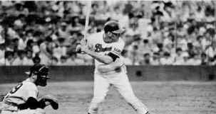

Fastballs in Japan
By Stu Kobak
Long
before Hideki Irabu and Hideo Nomo were making sports headlines as Japanese ballplayers coming to
the big leagues in the US, and long before the funny and savvy baseball movie, Mr. Baseball
was made starring Tom Selleck as the big fish out of water, the Japanese baseball league was
importing major leaguers at eh end of their playing days to add some punch to Japanese baseball.
The first wave of these "gaijin" baseball players were big stars in Japan but were very
much outsiders. Japanese baseball was not as successful as it is today but it was just as popular.
In the late 1960's and early seventies former New York and San Francisco
Giant shortstop Daryl Spencer made the big commitment of playing ball in Japan. Spencer brought a
big bat to Japan and parked balls over the short fences with regularity. In 1972, while working as
a newspaper editor in Kobe, Japan, I interviewed Daryl Spencer. Outspoken and straightforward,
Spencer had many controversial comments to make about Japanese baseball at that time. A few weeks
after the interview was published the big home run hitter and first American coach of a Japanese
team was headed back home to seek out a coaching job in the "bigs." With the
release of Mr. Baseball to DVD, I thought it make an enjoyable companion piece to publish
excerpts of that long ago interview.
Go Directly to the
Interview Excerpts
 |
|
Spencer at the bat in Japan.Photo by T. Fisher |
|
|
Good Times/Universal/1992/108m/WS 2.35
|
|
It happens every Spring.
Hundreds of major leaguers saunter out onto baseball diamonds across America to begin another
season of playing in "The Show," better known as the major league. For a few big league
ballplayers, usually in the twilight of their careers, a chance to extend their playing days awaits
them in the Japanese baseball league. Mr. Baseball is one of those fish out of water that
thoroughly succeeds on a number of levels.
 |
| Elliot powders one in
practice©Universal |
Chief amongst Mr.
Baseball's assets is another fine, under-appreciated, performance by Tom Selleck. Ironically, it was Selleck's likable screen
persona that originally made for a significant obstacle in my enjoyment of the film. Selleck
portrays an aging Yankee baseball star who is callously and humorously dealt to the Chunichi
Dragons of the Japanese baseball league. Selleck's Jack Elliot is initially cynical and acerbic and
not really likable, thus going against the grain of what an audience has come to expect of the
actor. There may be too many inconsistencies in Elliot to thoroughly believe the least attractive
aspects of his character, however, once that obstacle is broached, the film works beautifully.
Mr. Baseball is very insightful into Japanese culture that are not
always easy for the Western observer to understand. The message, humorously put forth by the film,
is that the way to understanding is through learning from each other. It is only by taking the best
each has to offer that both the Chunichi Dragons and Jack Elliot succeed.
Ken Takakura provides an
excellent foil for Selleck's loud baseball star. Genuine affection and respect for each other
develops out of the action of the film. Aya Takanashi is the beautiful love interest for Selleck.
Yoji Nishimura is very funny and charming as Elliot's interpreter.
Australian Fred Schepisi has
directed the film with the savvy sense of an outsider. When the film threatens to go too far toward
broad comedy, Schepisi tightens the reigns. His view of the contrasting cultures is outstanding.
Mr. Baseball looks very good when it isn't trying to navigate the
difficult waters of an NTSC decoder. It appears this DVD is from a composite transfer and straight
edge fine details are prone to aliasing and inter-line flicker. There was some cross color
artifacts evident as well. On the plus side, there is virtually no edge enhancement to exacerbate
straight edges. Colors are strong and flesh tones very natural. Subtitles are used to translate
much of the Japanese dialogue, though there were a couple of instances when Japanese players
spoke English and subtitles appeared anyway. The surround sound captures the ambiance
of the ball park beautifully. |
|
|
|
|

Selections from the feature archive include articles on Akira
Kurosawa, Frank Darabont,
Blonde
Bimbos, Hollywood Street Gangs,
or Vietnam:
The Hollywood Pariah, and many more....
Vietnam:
The Hollywood Pariah

During World War II, Hollywood pumped out war movies one after the other. Vietnam was was another
story. As far as Hollywood was concerned it was a pariah.

The
Movie Poster Archive includes extensive poster images from the films of stars like Susan Hayward,
Kirk Douglas, Katharine Hepburn and many more. Our featured star is James
Mason

Click on the DVD MIA symbol for
profiles of DVDs missing in action.
Add films to the DVD MIA Master List by filling out
a simple form. Click Here
 
DVDPlanet is the DVD
incarnation of legendary laser retailer Ken Crane's. Deep discounts and serious service.
 Direct from the corridors of the Home Theater Forum, Home
Theater Talk is the newest place on the Net to discuss everything home theater. Friendly atmosphere
and knowledgeable folks are the secret ingredients. Direct from the corridors of the Home Theater Forum, Home
Theater Talk is the newest place on the Net to discuss everything home theater. Friendly atmosphere
and knowledgeable folks are the secret ingredients.
 Specializing in the horror side of DVD, this site features interviews with
masters of DVD horror and reviews of discs. Specializing in the horror side of DVD, this site features interviews with
masters of DVD horror and reviews of discs.

Specializing in DVD reviews, DVD Authority boasts almost 400 reviews in an easy to use, elegant,
interface.
Umberto Passini Online

Vintage & Contemporary Film Poster Art. Umberto has developed a fine Internet
reputation as reliable and honest. Nice posters too!
Movie
Collector's World

The publication you can't do without if your interested in Movie Posters

Cinemedia is
the largest film and media directory with over 25,000 links.

Home to The American Society of Cinematographers. Includes features from
American Cinematographer Magazine and more...

DVD Deals may be the
best site for all you high-tech bargain hunters. This site helps you find coupons and cheap DVDs at
all the major online stores.

A vast reservoir of DVD information, reviews, the kitchen sink. Check
out their huge DVD database including reviews from many sites.

News, information, features about current films in theaters and in the
pipeline. Easy to use interface.

The official site for information about the great comic director. A treat for connoisseurs of
classic Hollywood madcap.

The
DVD Answer Man is a new site devoted to spreading the DVD gospel. Answers to
questions, reviews, links and more....

DVD links, information about Web specials, news, Site reviews.
Selections from the feature archive include articles on Akira Kurosawa,
Frank Darabont, Blonde Bimbos, Hollywood Street Gangs,
or Vietnam: The Hollywood Pariah,
and many more....

Click on the image above for as original view of Akira Kurosawa's work

Catch the Hollywood take on Blonde Bimbos by clicking on the
image above.

Movie Rage: Death in the Aisles
Everyone knows what it feels like to get angry at the
movies these days. Here's a humorous but not so delightful view of big screen misery.
|